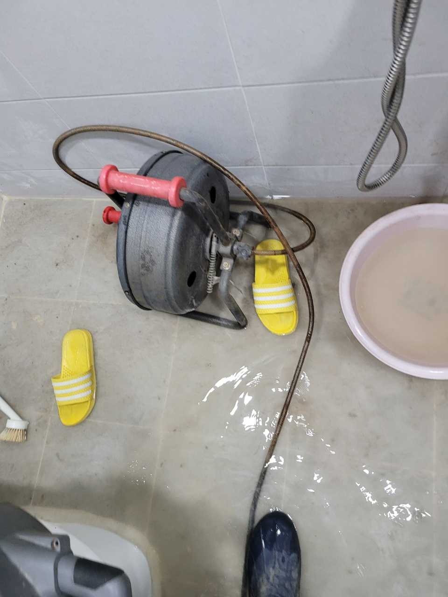
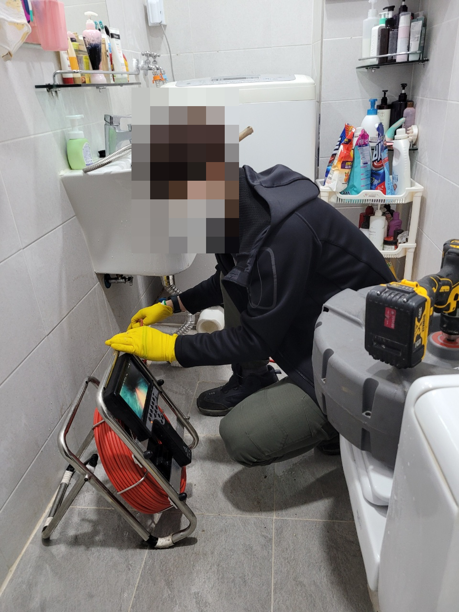
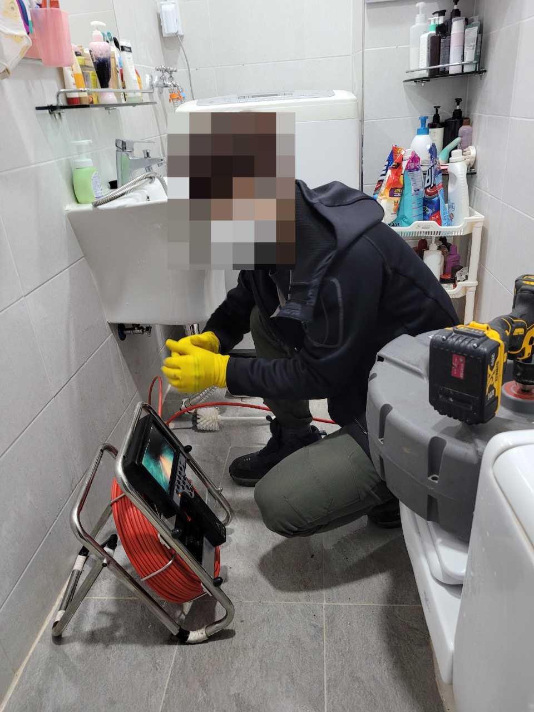
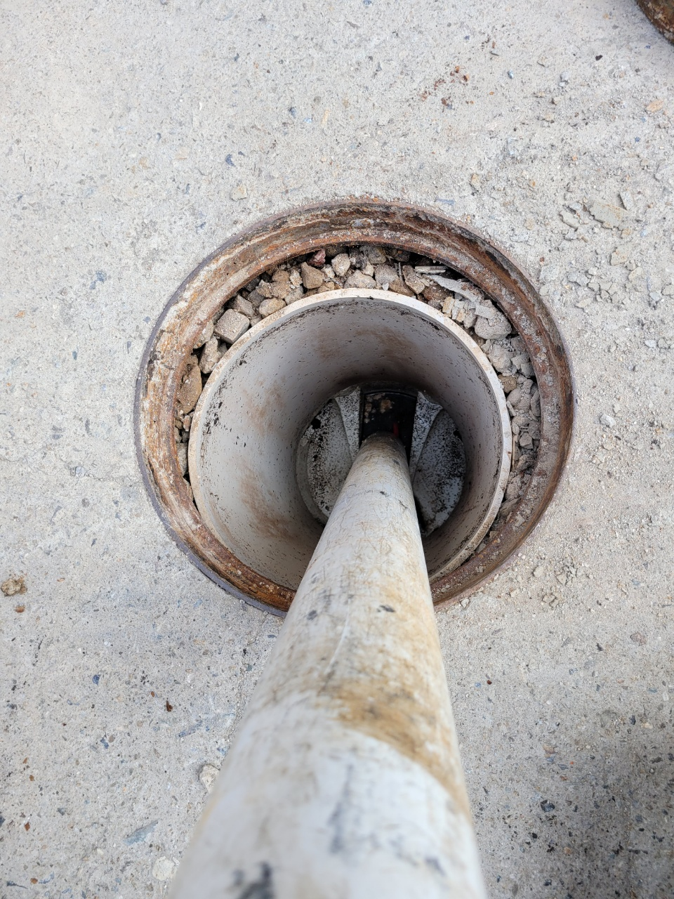
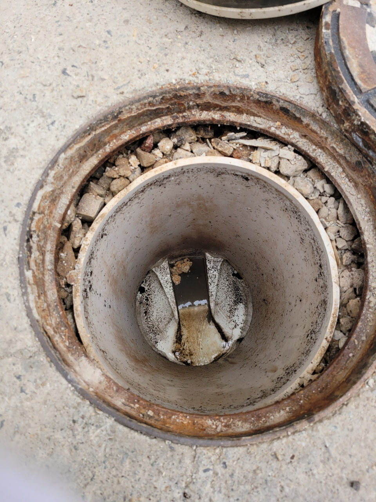

🏠 수지구 하수구막힘 역류해결 현상을 방치해선 안돼요!
용인 하수구막힘 전문 시공 후기

📋 작업 개요
- 위치: 용인
- 서비스 유형: 하수구막힘, 배관막힘, 맨홀막힘, 역류해결, 고압세척
- 작업 일시: 2023. 1. 9. 17:40
- 업체명: 하수구수사대 (010-5615-2118)
🔍 문제 상황
안녕하세요 하수구수사대입니다.
우리가 평소에 의식을 하지 않고 살아가면서 생활에 꼭 필요한 것들이 많이 있습니다. 눈에 보이지 않아서 신경을 쓰지는 않지만 배관 같은 경우에는 생활하수를 흘려보내는 중요한 곳이라고 할 수 있습니다. 이러한 배관의 막힘이 발생하는 곳으로는 일반 가정집뿐만 아니라 조리를 자주 하는 식당에서도 더욱 잦은 막힘 현상이 발생을 할 수 있는 것입니다.
배수구에는 보통 이러한 막힘을 예방하기 위해서
거름망이 설치되어 있는 경우가 많이 있는데요 하지만 소량의 이물질들은 지속적으로 유입이 될 수밖에 없기 때문에 이러한 작은 이물질들이 모이게 되면서 결국에는 하수구막힘이 발생하게 되는 것입니다. 거름망으로 걸러진 이물질들을 제때에 제거를 해주게 된다면 어느 정도 하수구막힘을 예방할 수도 있겠지만 일일이 제거를 하는 것이 말처럼 쉬운 것은 아닙니다. 그렇기 때문에 공용공간의 경우에는 주기적으로 전문 업체를 통해서 점검을 받게 되면 하수구가 갑자기 막히게 되는 경우를 줄일 수 있는 것입니다.

🔎 원인 분석
💡 전문가 진단: 배수구에는 보통 이러한 막힘을 예방하기 위해서
수지구 하수구막힘 역류해결을 위해
이번에도 역류가 발생했다는 의뢰를 받고 빠르게 출동을 하게 되었습니다. 수지구 하수구막힘 역류해결 이번 현장은 규모가 꽤 큰 건물이었기 때문에 하수구막힘으로 인한 피해가 더욱 클 것으로 생각이 되었습니다. 그래서 좀 더 빠르게 해결을 해드리기 위해서 신속하게 현장으로 달려가 보았습니다.
수지구 하수구막힘 역류해결현장에 도착을 해서 문제가 발생한 맨홀 뚜껑을 먼저
열자마자 강한 악취와 함께 역류한 물과 이물질들이 넘쳐흐르게 되는 모습을 발견할 수 있었습니다. 저희는 생각했던 것보다 더욱 심각한 상황임을 인지를 했는데요 이렇게 맨홀에서 역류까지 발생하게 되는 상황은 생각보다 훨씬 더 좋지 않은 상황이라고 할 수 있습니다.

🔧 작업 과정
이런 경우에는 즉시 전문가에게 의뢰를 해서 정확한 원인을 파악을 해서 그에 맞게 해결을 하는 것이 가장 현명하다고 할 수 있었습니다. 맨홀 뚜껑을 열고 가장 먼저 확인한 것은 차오르는 이물질과 구정물들을 모두 제거를 하는 과정이었습니다. 현재 상태로는 내시경으로도 내부 확인을 하기 어려운 상황인데요 우선적으로 고인 물을 제거를 해서 작업환경을 확보하는 것이 중요하다고 할 수 있습니다.
처음에 석션기를 이용해서 위에 고여있는 물을 빼주는 작업을 하였는데요 어느 정도 제거를 하고 나니까 내부를 확인해 볼 수 있는 상태가 되었습니다. 수지구 하수구막힘 역류 해결 이번 현장의 경우에는 식당 내부 배관으로 흘러들어 가게 되는 이물질들이 문제가 되는 상황이었습니다.
하지만 문제를 악화시킨 원인은 아마도 맨홀 커버의 구멍 사이로 들어갔게 된 진흙 덩어리라고 생각이 되었습니다. 비가 많이 오는 때에는 이렇게 외부의 진흙이나 이물질들이 한꺼번에 빨려 들어가서 배관을 막게 되는 경우가 있습니다. 기존에도 이물질이 가득 차 있었는데요 배수관 속으로 갑자기 빗물과 각종 이물질 그리고 진흙 덩어리들이 유입이 되면서 하수구막힘이 발생하게 된 것이었습니다.
이러한 상황에서는 스프링기나 고압세척을 이용해서 해결을 할 수 있는데요
배관 내의 이물질의 양이나 배관의 크기 등에 따라서 적합한 장비를 선택해서 작업을 하게 됩니다. 하수구의 막힘은 원인 해결을 하는 것이 가장 중요한 것인데요 전문 업체에서는 이렇게 상황에 맞는 장비를 사용을 할 수 있기 때문에 근본적인 해결이 가능하다고 할 수 있습니다.
스프링기를 이용해서 이물질들을 분쇄를 하고


✅ 작업 완료
이물질이 제거가 된 후에 마지막에는 세척작업을 하고 마무리를 하였습니다.
경기도 용인시 수지구 수지로342번길 32 5층 508호 에이치01




⚠️ 하수구 배관 막힘 예방 및 관리 가이드
- ✅ 머리카락, 비닐, 물티슈 등 물에 분해되지 않는 이물질은 하수구 유입을 절대 금지해 주세요.
- ✅ 하수구 거름망을 씌우고 모여진 이물질은 주기적으로 쓰레기통에 바로 비워주셔야 합니다.
- ✅ 배관 노후가 심할 경우 이물질이 더 쉽게 걸리므로 주기적인 배관 세척(고압세척 등)을 권장합니다.
- ✅ 작업 후 1년 이내 재발 시 하수구수사대에서 무상 A/S 보증 서비스를 제공합니다.
💡 핵심 정리
- 확실한 장비 작업(내시경 점검 및 샤프트 스케일링)으로 원인을 뿌리 뽑습니다.
- 작업 후 1년 이내에 동일한 부위 재발 시 100% 무상 A/S 서비스를 보장합니다.
- 서울 · 경기 · 인천 전 지역에 24시간 언제든 긴급 출동할 수 있도록 항시 대기 중입니다.
❓ 자주 묻는 질문 (FAQ)
🚨 용인 하수구막힘 문제로 고민이신가요?
정확한 원인 진단과 확실한 시공으로 재발 없는 해결을 약속드립니다.
24시간 긴급 출동 | 서울 · 경기 · 인천 전지역 | 1년 내 재발 시 무상 A/S